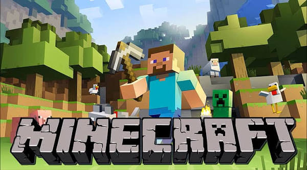
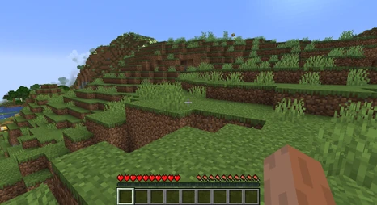
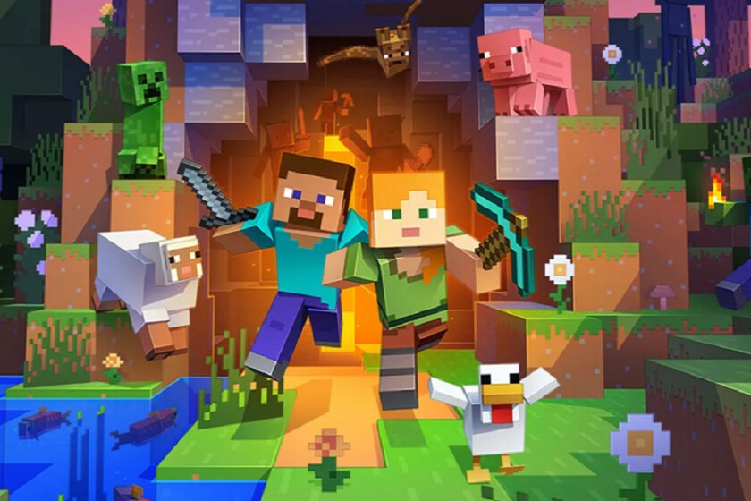

Desde su creación, Minecraft fue desarrollado casi exclusivamente por Markus Persson "Notch" hasta que Jens "Jeb" Bergensten comenzó a trabajar en él y desde entonces se ha convertido en el responsable de su desarrollo. Cuenta con música compuesta por Daniel Rosenfeld "C418", Lena Raine y Aaron Cherof, además de cuadros artísticos pintados por Kristoffer Zetterstrand. La versión inicial, conocida actualmente como Minecraft Classic, fue publicada el 17 de mayo de 2009. La versión completa del juego se publicó el 18 de noviembre de 2011. Desde su lanzamiento, Minecraft se ha actualizado y ampliado a dispositivos móviles y consolas. El 6 de noviembre de 2014 Microsoft adquirió Minecraft y todos los activos de Mojang Studios por 2.500 millones de dólares estadounidenses. Desde entonces, Notch abandonó la empresa de Mojang y ya no trabaja en Minecraft.

Uno de los aspectos centrales de la jugabilidad en Minecraft es el modo supervivencia. El jugador debe gestionar su barra de salud y hambre, evitando el daño de caídas, el ataque de mobs hostíles o situaciones ambientales como el fuego o el ahogamiento. Para evitar morir, es necesario recolectar recursos, fabricar armas y herramientas, encantarlas y a su vez buscar alimentos, que se pueden obtener al cazar animales o cultivar plantas. El ciclo de día y noche añade tensión, ya que al caer la noche aparecen criaturas hostiles como zombies, esqueletos y creepers, lo que obliga al jugador a protegerse construyendo refugios o enfrentando el peligro con el equipo adecuado. La exploración es otro elemento fundamental, ya que el mundo de Minecraft tiene biomas con bloques y características propias, como bosques, desiertos, océanos, montañas y tundras, donde se encuentran diferentes materiales y recursos además de estructuras como aldeas, templos, minas abandonadas y fortalezas que contienen materiales, tesoros y desafíos. El jugador también puede acceder a otras dimensiones por medio de portales, como el Nether, una dimensión peligrosa llena de lava y mobs peligrosos, y el End, donde se encuentra el jefe final del juego, el Enderdragón.

Los servidores multijugador de Minecraft se han desarrollado para incluir sus propias reglas y costumbres, guiados por sus administradores y moderadores. El término griefer, que significa un jugador que causa griefing, es un término típico en Internet, pero ha adoptado su definición en los servidores de Minecraft: una persona que destruye o profana las creaciones de otros usuarios en los servidores. Los griefers son la razón por la que muchos administradores de servidores establecen reglas, pero esto se ha llevado un paso más allá con modificaciones en el servidor de Minecraft e incluso servidores de reemplazo basados en complementos como Bukkit. Debido a estos servidores basados en complementos, se han mostrado nuevas funciones creadas por el usuario en Minecraft. Esto incluye características como dinero, vehículos, protección, objetos de RPG y más. Estas funciones normalmente no requieren modificación en el cliente de un usuario y se puede acceder a ellas mediante comandos de chat. Con los controles predeterminados, la pantalla de chat se abre presionando
